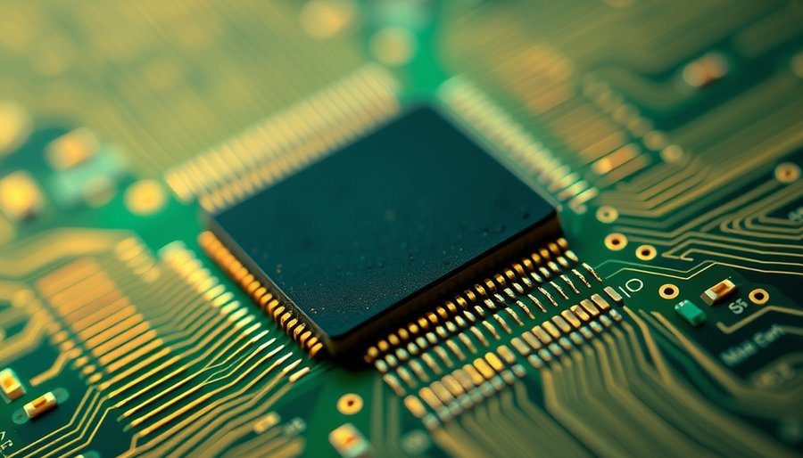
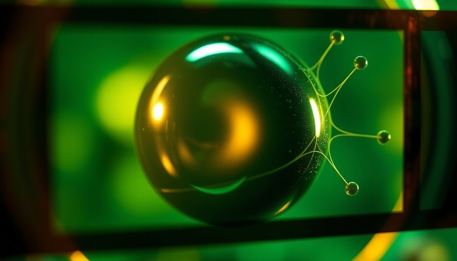
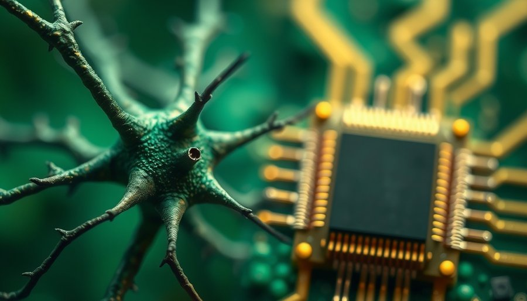

人们习惯把快和流畅当作一回事。一个工具响应迅速，操作跟手，自然就是流畅的。Zed把这种直觉推到了极限：基于GPU加速的GPUI框架让每个界面元素几乎在指令发出的同一瞬间出现，官方标榜毫秒级重绘。从Electron时代逃出来的开发者最初是欢呼的，终于不用忍受VS Code的臃肿和延迟了。在那些年里，打开一个项目要等十几秒，输入字符有可见的滞后，任何动画都像在掩盖性能不足。所以当Zed以原生速度和零延迟出现时，它被看作一场解放。
但用了一段时间后，一种微妙的不适开始浮现：光标跳动生硬，弹窗像被闪了一下，侧边栏切换缺一股润滑感。开发者社区因此分裂成两派，一派认为动画是视觉垃圾，无拖泥带水的闪现正是Zed的卖点；另一派觉得眼睛容易疲劳，习惯VS Code的平滑光标和缓动之后，回去用Zed像在看快进镜头。两派吵了很多年，但都没回答一个更根本的问题：为什么一个响应快得无可挑剔的工具，会让人的主观感受反而变慢了？

因为人脑判断流畅靠的从来不是帧率，而是一条默认假设：世界是连续的，一个东西从A移到B，中间必然有轨迹。电影是这套机制最好的证据，银幕上每秒24帧，每一帧都是静止画面，肉眼看到的却是无缝的运动。心理学把这种现象叫做短程运动系统：视觉系统在100毫秒左右的时间窗口内，会自动把两个相近位置上先后出现的刺激解释为同一个物体的位移，补全中间的路径。大脑每时每刻都在主动构建连续性，画面输入只是原材料。
电影剪辑师甚至可以利用这一点：切换镜头前先让画面里出现一个运动信号，比如一个人物从左边跑向右边，观众的视线被引到正确位置，下一个镜头从右边开始，剪辑就变得不可见。没有这个信号，观众就得停下来修复自己的心理表征，连续性瞬间断裂，他们会意识到刚才切了一下。界面上的过渡动画，干的正是剪辑师那双手的活。100到200毫秒的淡入淡出不是装饰，它是一句视觉预告：注意，接下来这里会出现一个东西，它正在过来。没有这句话，大脑就得在每一帧里重新判断：刚才那个按钮呢？这个菜单是哪来的？它是同一个东西吗？每一次判断都是微小的认知成本。
注意力科学把这种凭空出现的代价量化过。Yantis和Jonides在1984年的实验里证明，突然出现的物体天然抢占视觉通道，除非先用有效线索把注意力钉在别处。所以Zed每次无过渡的界面切换，都在强行拽走你的注意力一次：看光标、弹菜单、切面板，每一次都是一次打断。单次打断微乎其微，可写一晚上代码要被打断几百上千次，眼睛就是这么累起来的。快是机器的成绩单，累是大脑的账单。
另一个混淆发生在产品层。Nielsen早在1993年就给出响应时间的三个临界值：0.1秒之内用户觉得是我自己在操作，1秒之内思维流不断，10秒以上注意力溃散。Zed做到了0.1秒之内，兑现的是直接操纵感，这是它真正高明的地方。按下一个键，字符立刻出现，你感觉不到任何中介，就像用笔在纸上写字。但直接操纵感只回答一个问题：它是不是我让它发生的；它不回答另一个问题：它是不是同一个东西在连续地动。两个指标被当成一回事，是这一轮工具设计争论里最深的误会：延迟只是体验的一个维度，连续性才是另一个维度，Zed把前者拉满，后者归零。
加工流畅性理论说明了为什么这个差别主观上如此强烈。Reber等人在2004年提出，信息加工越省力，情绪标记越正面。一个带过渡的界面，大脑每步都有预告、有轨迹、有落点，加工是连续的、免费的；一个全闪切的界面，大脑每一步都要重新建对象身份、重新定向、重新验证，加工被打断几百次。前者被体验为顺手，后者被体验为干瘪。顺手感的真正来源是认知流的无阻断，速度只是背景。所以动画是浪费时间的说法在心理层面不成立。动画是给大脑的省力装置，删掉它省下的机器时间，全都转成了人脑的税。

这场不适背后，是工具行业对性能的集体驯化。从Electron时代的慢和臃肿里逃出来的人，把原生、快、零延迟当成救赎，性能变成了可测量、可对比、可宣传的硬指标；流畅感是软体验，难量化、难排优先级、难写进路线图。于是快上升为产品哲学，动画被归入视觉浪费一类。工程师文化里有一种倾向，把任何不直接贡献于功能或速度的视觉元素都看作多余。但人脑是一块不会升级的硬件。渲染引擎可以从16毫秒优化到1毫秒，知觉系统整合信息的窗口却始终是那100毫秒级的恒定值。机器时钟被一路压榨，生物时钟一步没动，两边越拉越开，最终快到了超出人脑整合带宽的程度。这种快对使用者而言，已经从优化变成了另一个方向的错配。
讽刺的是，Material Design的动画规范和Nielsen早年提出的响应时间指南，不约而同地把桌面过渡定在150到200毫秒，这段刻意的慢恰恰让大脑预判了落点，反而省下了事后找回位置的时间：适度的慢，服务于被感知到的快。Zed官方路线图里有一条关于引入微妙微动画的讨论。这条路线要补的，是一堂认知课。
有人会说，适应了之后就不觉得累了。确实，Yantis和Jonides在1990年的后续实验证明，注意力高度聚焦时突现的干扰会显著减弱。不少Zed用户反映，用了三五天之后回头看VS Code反而觉得它的动画黏糊。这说明注意捕获并非不可驯服，个体差异也真实存在。但这条边界恰恰印证了核心机制：适应过程中，大脑学会了提前分配注意力，自己给自己做预告。动画的缺失依然存在，只是大脑用额外资源补偿了它。代价是，这需要消耗额外的认知资源，并且不是所有人都能顺利适应。对于大量用户来说，Zed的快仍然是一种持续的微小负担。那些适应了的人，也许只是换了一种方式支付成本。
尾声
在官方动画落地前，几件小事能降低不适感：平滑光标、低对比度主题、微调滚动敏感度。但更重要的可能是心理层面的：给自己几天适应期。它快，你也确实可以学着不等它。不过，当工具的快已经快到超出人脑的整合窗口时，我们到底是在优化工具，还是在惩罚自己？这个问题留给每个使用者对照自己的体验。
小汪老师的成长观察笔记